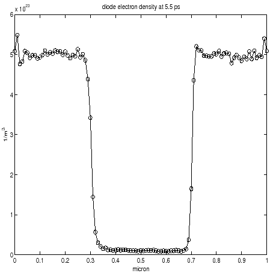
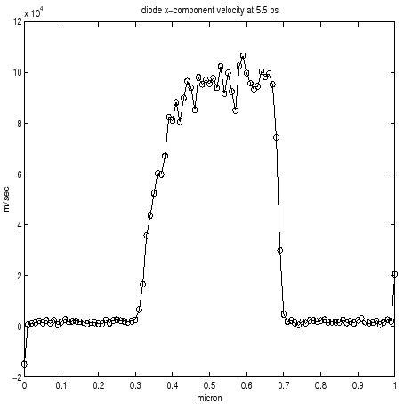
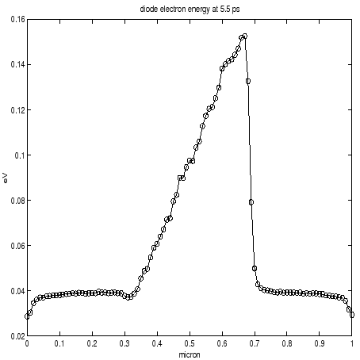
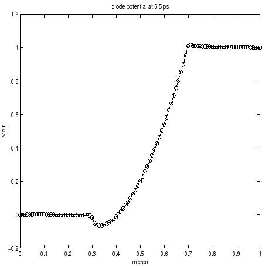
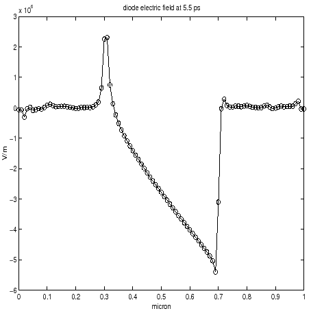

Next: Physical Models employed in
Up: Introduction
Previous: Overview
Contents
In this section I introduce a first example of semiconductor device simulated by GNU Archimedes in order to show how it is easy to define a new general device. Let us report, in the following, the definition of a device which is the benchmark in semiconductor simulation: the
-
-
Silicon diode.
# Silicon DIODE test-1
# created on 30 sep.2004, J.M.Sellier
# modified on 06 oct.2004, J.M.Sellier
# This file simulate a Silicon Diode.
# To run it type:
# archimedes diode.input
MATERIAL SILICON
TRANSPORT MC ELECTRONS
FINALTIME 5.5e-12
TIMESTEP 0.0015e-12
XLENGTH 1.0e-6
YLENGTH 0.1e-6
XSPATIALSTEP 100
YSPATIALSTEP 25
# Definition of the doping concentration
# ======================================
DONORDENSITY 0. 0. 1.0e-6 0.1e-6 2.e21
DONORDENSITY 0. 0. 0.3e-6 0.1e-6 5.e23
DONORDENSITY 0.7e-6 0. 1.0e-6 0.1e-6 5.e23
ACCEPTORDENSITY 0. 0. 1.0e-6 0.1e-6 1.e20
# Definition of the various contacts
# ==================================
CONTACT LEFT 0.0 0.1e-6 OHMIC 0.0 5.e23
CONTACT RIGHT 0.0 0.1e-6 OHMIC 1.0 5.e23
CONTACT UP 0.0 1.0e-6 INSULATOR 0.0
CONTACT DOWN 0.0 1.0e-6 INSULATOR 0.0
NOQUANTUMEFFECTS
MAXIMINI
# SAVEEACHSTEP
LATTICETEMPERATURE 300.
STATISTICALWEIGHT 1500
MEDIA 500
OUTPUTFORMAT GNUPLOT
# end of MESFET test-1
The name of this file is "diode.input" and you can find it in the distribution directory :
archimedes-0.0.4/tests/DIODE
If you run it by typing in the shell command line
# archimedes diode.input
You will get, after the computation and plotting the results, the pictures (which are cuts on y=0.05 micron) you can find in figures (4.1)-(4.5).
Figure:
Density Profile obtained by GNU Archimedes
|  |
Figure:
Electron Velocity obtained by GNU Archimedes
|  |
Figure:
Electronic Energy obtained by GNU Archimedes
|  |
Figure:
Potential Profile obtained by GNU Archimedes
|  |
Figure:
Electric Field obtained by GNU Archimedes
|  |
As we will see soon, it is very easy to define a new semiconductor device. First of all, we see that the rows starting by the symbol "#" are just comments. Let us analyze, now, some keywords present in this example. For more informations about all the syntax commands of GNU Archimedes you must read the chapter related on this topic.
- The keyword MATERIAL.
This keyword is easy to understand. Invoking it, you choose the material of which your device is made. At the present time, GNU Archimedes accept only the Silicon and GaAs materials, but in the next future you will can choose other materials. So, for the moment, the only correct uses you can do of MATERIAL are the following :
MATERIAL SILICON
or
MATERIAL GAAS
- The keyword TRANSPORT. Also this one is easy to understand. By this command, you choose what kind of charge transport you want, including the mathematical model for the transport (Monte Carlo or simplified model). In this case you can choose between only electrons, only holes, or bipolar transport (up to the release 0.0.4 it is possible to simulate all this particles). Pay attention to the fact that the syntax for this command has been changed in the release 0.0.4.
- The keyword FINALTIME. Nothing is easier to understand :) By this command, you choose the final time at which you want to stop the simulation and save the results.
- The Keyword TIMESTEP. When you start a simulation and you have to reach the choosed final time, you have to proceed by time step. The time step you choose have to respect an appropriate condition, i.e. it must be not too big, in order to avoid unphysical effects during the simulation. We will describe this conditions better in a next paragraph.
- The Keywords XLENGTH and YLENGTH. Also these keywords are easy to understand. If one think of our simulated device as a simple rectangle, then we have to specify the length of the edges in the x-direction and the y-direction. This is done by these two keywords. Even if not all semiconductor devices are rectangular, in this first release of GNU Archimedes we can simulate only rectangular domains. This will be improved in some next version.
- The keywords XSPATIALSTEP and YSPATIALSTEP. These commands are invoked when one want to define the number of cells in the x-direction and the y-direction of a rectangular domain.
- The keyword DONORDENSITY. This keyword is needed when one wants to define a rectangular sub-domain in which one defines a certain donor density. This command is more complex than the precedent one (but, don't worry, quite easy to understand). See the paragraph related to this command to known more about it.
- The keyword ACCEPTORDENSITY. This is the same as the precedent keyword (i.e. DONORDENSITY), but for the holes. Pay attention to the fact that even if you are not simulating the transport of holes, you need to fix a value of the holes concentration on the devices. This is needed by the Poisson equation which take into account the accpetor density, in order to solve accurately the electric field. See the paragraph related to this topic for more informations.
- The keyword CONTACT. By this command, you choose where are positioned the various contacts. Furthermore, you can specify what kind of contact it is, chossing among ohmic, insulator and Schottky contact. When desired you can specify the applied voltage on the contact.
- The keyword NOQUANTUMEFFECTS. This command is invoked when you know, a priori, that the quantum effects are negligible, and so you don't want GNU Archimedes compute them (for example when the electronic wave lenght is negligible with respect to the caracteristic length of the device). This is important when you want to get a smaller run-time with respect to the run-time of a full-effects simulation.
- The keyword MAXIMINI. This is a simple command for the visualisation of the maximum and minimum of some macroscopic values in real-time, i.e. during the simulation. Avoid to invoke this command if you want to obtain a shorter run-time.
- The keyword SAVEEACHSTEP. This is needed when you want to save all the solutions at each time step. This is a very usefull command in the case you want to follow the transient behaviour of a device in real-time or when you want to create a movie showing the transient dynamics of a simulated device.
- The keyword LATTICETEMPERATURE. It is easy to understand that you have to fix a temperature of the lattice of the device simulated. This is done by this simple command.
- The keyword STATISTICALWEIGHT. By this command you choose the statistical weight of the particles. Pay attention to the fact that the statistical weight is a piecewise-function of the position, so the statistical weight coincides to the number of super-particles per cell only in the most doped sub-domain of the device.
- The keyword MEDIA. As GNU Archimedes is a Monte Carlo simulator, it is impossible to avoid the noise in the solutions. The noise is intrinsic to the method. So, in order to get less noisy solutions, it is necessary to take an average mean in time of the values simulated. Fixing a value to MEDIA means that you will take the mean average of the solution over the last MEDIA time steps.
- The keyword OUTPUTFORMAT. By this command, you choose the format of the output, i.e. the output files generated by GNU Archimedes during or the end of a simulation.
These are only some keywords (or commands) you can use in GNU Archimedes to describe the geometry and the physical characteristics of a simulated device. As you can see, they are simple to understand and very general. So it is easy to define a device with quite general characteristics.
Next: Physical Models employed in
Up: Introduction
Previous: Overview
Contents
Didier Link
2007-05-18